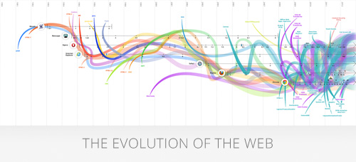

<!DOCTYPE html>
<html>
<head>
    <meta http-equiv="content-type" content="text/html; charset=UTF-8"/>
    <title>The Evolution of the Web</title>
    <meta name="description"
          content="Interactive infographic about the evolution of browsers and the web. This infographic features major web browsers since 1993 such as Mosaic, Netscape, Opera, Internet Explorer, Safari, Firefox, and Chrome, as well as key developments in web technologies such as HTML, CSS, and JavaScript.">
    <meta name="keywords" content="The evolution of the web, google, html5, chrome, browsers, css3">
    <meta name="author" content="Google, Hyperakt, Vizzuality">
    <meta name="DC.title" content="Infographic: Evolution of Browsers and the Web">

    <meta property="og:title" content="The evolution of the web"/>
    <meta property="og:type" content="Visualization"/>
    <meta property="og:url" content="http://www.evolutionofweb.com"/>
    <meta property="og:image" content="img/Evolution_of_the_web.jpg"/>

    <link rel="shortcut icon" href="img/3.ico">
    <link href='http://fonts.googleapis.com/css?family=Open+Sans:300,400,700,800' rel='stylesheet' type='text/css'>
    <link rel="stylesheet" href="css/style.css"/>

    <noscript>
        <meta http-equiv="refresh" content="0;url=/javascript">
    </noscript>

    <script type="text/javascript" src="js/libs/modernizr.js"></script>
</head>
<body>
<!-- HOME -->
<article class="home">
    <section>
        <div class="lang-selector">

            <a>English (US)</a>
            <ul>

                <li><a href="?hl=en-gb">English (UK)</a></li>
                <li><a href="?hl=es">Español</a></li>
                <li><a href="?hl=ru">Русский</a></li>
                <li><a href="?hl=zh-cn">中文 (简体)</a></li>
                <li><a href="?hl=zh-tw">繁體中文 (台灣)</a></li>
                <li><a href="?hl=fr">Français</a></li>
                <li><a href="?hl=de">Deutsch</a></li>
                <li><a href="?hl=pt-br">Português (Brasil)</a></li>
                <li><a href="?hl=it">Italiano</a></li>
                <li><a href="?hl=nl">Nederlands</a></li>
                <li><a href="?hl=ja">日本語</a></li>
                <li><a href="?hl=th">ไทย</a></li>
                <li><a href="?hl=id">Bahasa Indonesia</a></li>
                <li><a href="?hl=tr">Türkçe</a></li>
            </ul>

        </div>

        <h1>The Evolution of the Web</h1>
        <p>The web today is a growing universe of interlinked web pages and web apps, teeming with videos, photos, and
            interactive content. What the average user doesn't see is the interplay of web technologies and browsers
            that makes all this possible.</p>
        <p>Over time web technologies have evolved to give web developers the ability to create new generations of
            useful and immersive web experiences. Today's web is a result of the ongoing efforts of an open web
            community that helps define these web technologies, like HTML5, CSS3 and WebGL and ensure that they're
            supported in all web browsers.</p>
        <p>The color bands in this visualization represent the interaction between web technologies and browsers, which
            brings to life the many powerful web apps that we use daily.</p>
        <a href="#explore" id="explore"><span class="explore">Explore</span></a>

    </section>
</article>


<!-- VISUALIZATION -->
<article class="visualization">
    <header>
        <h1><a href="/?hl=en">The Evolution of the Web</a></h1>
        <nav>
            <a href="/#/evolution" class="techs selected">Browsers & Technologies</a>
            <a href="/#/growth" class="growth disabled">The Growth of the Internet</a>
        </nav>
        <span class="night"></span>
        <input type="checkbox"/>
        <span class="day"></span>
        <g:plusone annotation="none" style="float:right"></g:plusone>
    </header>

    <section class="viewport">
        <div class="container">
            <div class="wrapper">
                <div class="grid"></div>
                <div class="paths"></div>
                <div class="path_gradient"></div>
                <div class="browsers"></div>
                <div class="graphs"></div>
            </div>
        </div>

        <section class="legend">
            <div>
                <a href="#users" class="users disabled">
                    <span class="line"></span>
                    <span class="rectangle"></span>
                    Global Internet Users
                </a>
            </div>
            <div class="margin">
                <a href="#traffic" class="traffic">
                    <span class="line"></span>
                    <span class="circle"></span>
                    Global Internet Traffic
                    <small>(in petabytes per month)</small>
                </a>
            </div>
        </section>

        <footer>
            <a class="credits" href="#credits">Credits</a>
            <div class="graph_bar"></div>
            <div class="credits">
                <a class="close" href="#close">x</a>
                <h4>Credits</h4>
                <p class="margin">Made with some friends from the Google Chrome team</p>
                <p>2011 & 2012 versions by <a href="http://hyperakt.com" target="_blank">Hyperakt</a> and <a
                        href="http://vizzuality.com" target="_blank">Vizzuality</a></p>
                <p>2010 version by <a href="http://www.mgmtdesign.com/" target="_blank">mgmt design</a> and <a
                        href="http://good.is" target="_blank">GOOD</a></p>

                <h4 class="margin">Sources</h4>
                <p class="margin">Wikipedia, CanIUse.com, W3C, HTML5rocks.com and Mozilla Developer Network</p>
                <p>Browser screenshots used in this infographic were sourced with best efforts from the web
                    community.</p>
            </div>
        </footer>
        <div class="graph_bar_tooltip"></div>
    </section>

    <section class="controls">
        <a class="left-arrow"><span class="arrow left"></span></a>
        <a class="right-arrow"><span class="arrow right"></span></a>
        <div class="zoom-controls">
            <a href="#zoom_in" class="zoom_in">+</a>
            <a href="#zoom_out" class="zoom_out">-</a>
        </div>
    </section>
</article>

<!-- MAMUFAS -->
<article class="browsers">
    <section class="window">
        <a href="#close" class="close_hidden left">left</a>
        <a href="#close" class="close_hidden right">right</a>
        <div class="carousel" id="galleria">
            
        </div>
        <div class="info">
            <a class="close_galleria" href="#close_galleria">close_galleria</a>
            <span class="browser_image"></span>
            <h2></h2>
            <p></p>
            <ul class="dots-list"></ul>
            <a class="next" href="#next_version">galleria next</a>
            <a class="previous" href="#previous_version">galleria previous</a>
        </div>
    </section>
</article>


<!-- Language -->
<script defer type="text/javascript">
    var current_language = "en";
</script>


<script type="text/javascript" src="js/i18n/en.js"></script>


<script>
    /**
     this function replaces the behaviour of default gettext
     to fix some strings with double \\ in line jumps
     */

    old_gettext = window.gettext;
    window.gettext = function (s) {
        var f;
        if (s.indexOf('\n') !== -1) {
            var t = old_gettext(s);
            if (t == s) {
                t = old_gettext(s.replace(/\n/g, '\\n'));
                if (t != s) {
                    return t.replace(/\\n/g, '\n')
                }
            }
            f = t;
        } else {
            f = old_gettext(s);
        }
        return f.replace(/⏎/g, '');
    }

</script>


<script defer type="text/javascript" src="js/all.js"></script>


<script type="text/javascript">
    var _gaq = _gaq || [];
    _gaq.push(['_setAccount', 'UA-32991408-1']);
    _gaq.push(['_trackPageview']);

    (function () {
        var ga = document.createElement('script');
        ga.type = 'text/javascript';
        ga.async = true;
        ga.src = ('https:' == document.location.protocol ? 'https://ssl' : 'http://www') + '.google-analytics.com/ga.js';
        var s = document.getElementsByTagName('script')[0];
        s.parentNode.insertBefore(ga, s);
    })();
</script>


</body>
</html>
